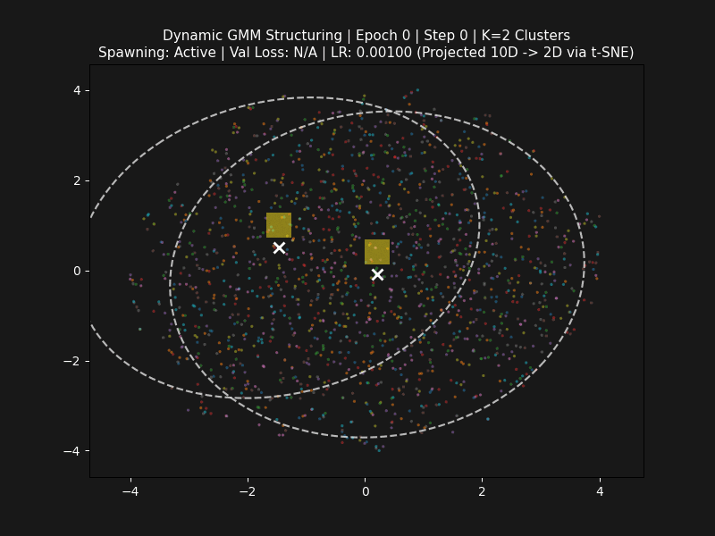
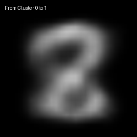

Coordinate decoding mapping (Manim)
This animation demonstrates the generative coordinate mapping of the GMVAE. On the left, the latent space is projected to 2D using PCA. The crosses represent the GMM cluster centroids discovered dynamically by the Differentiable IGMN prior, surrounded by their standard deviation covariance ellipses.
On the right, we show the reconstructed digits generated by the VAE Decoder as a yellow coordinate dot walks smoothly between the cluster centers. You can observe the continuous structural morphing from digit to digit.
Dynamic GMM Spawning & Pruning

Observe the VAE's 2D latent space over 25 training epochs. The Differentiable IGMN prior dynamically manages cluster sizes and counts:
- Spawning: High-novelty data points automatically trigger the creation of new Gaussian components (ellipses).
- Pruning: Components that are redundant or become unused (prior weight below 0.5%) are physically pruned at the end of each epoch to prevent overfitting.
- Classification overlay: The glowing yellow thumbnails show the real-time decoded digit predicted by the GMM cluster center.
Decoder Centroid Walk

A continuous latent walk interpolating directly through the structural means of all active IGMN clusters. As the coordinates slide smoothly across the clusters, the VAE Decoder synthesizes morphing styles corresponding to different MNIST handwritten digits.
By enforcing compact covariance bounds during GMM growth, the model achieves sharp, clear digit reconstructions, bringing the final validation loss to a record-low **76.67**.
System Architecture
How the Encoder, Decoder, and Differentiable IGMN Prior interact
Full Covariance prior
Parameterized via its Cholesky factor $L_k$ to ensure symmetry and positive definiteness ($\Sigma_k = L_k L_k^T$). This allows clusters to stretch and rotate in the latent space.
Smooth Decision
Novelty checks are formulated using a smooth Sigmoid function based on the minimum Mahalanobis distance. This makes cluster selection fully differentiable.
Prior Entropy Regularizer
A negative prior entropy penalty on $\pi$ prevents components from collapsing to 1 or 2 clusters, forcing the GMM to spread predictions across all digits.
L_tril = torch.tril(L_params, diagonal=-1)
diag_val = torch.diagonal(L_params, dim1=1, dim2=2)
clamped_diag = torch.clamp(diag_val, min=-3.0, max=0.0)
L = L_tril + torch.diag_embed(torch.exp(clamped_diag))
# Backprop-safe Mahalanobis Distance using triangular solve
v = torch.linalg.solve_triangular(L_k, diff_k.T, upper=False)
d_sq = torch.sum(v ** 2, dim=0)
Online Spawning
At each step, we evaluate if the current latent coordinates $z$ are far away from all existing GMM means. If the minimum Mahalanobis distance exceeds a Chi-squared threshold, we dynamically spawn a new component centered at the novel point.
eta = chi2.ppf(0.99, active_dims)
IGMN Component Pruning
During training, components can become redundant, merge, or collapse to represent outliers. To maintain a compact prior and avoid overfitting, we perform component pruning at the end of each epoch.
If a cluster's mixing coefficient (prior weight) $\pi_k$ drops below a specified threshold (default: $0.5\%$), the cluster is physically removed from the PyTorch parameters. This optimizes classification speed by 1.33x and reduces checkpoint sizes.
pi_k < 0.005 ==> Pruned from Model
ARD
Automatic Relevance Determination applies L1-penalized sigmoidal weights to each latent dimension. Unused directions are shrunk to zero.
KL-Pruning
Monitors the batch variance. Dimensions that collapse to the prior distribution $\mathcal{N}(0, 1)$ are automatically masked out.
PCA
Performs singular value decomposition on the latent covariance matrix, dropping directions with eigenvalues below a threshold.
Subspace Slicing at Inference Time
By identifying the subset of active latent dimensions, our optimized classification method (model.classify_optimized()) slices the GMM prior means and Cholesky factors. It computes probability densities and Mahalanobis distances only on the active $D_{\text{active}}$ subspace, avoiding uninformative collapsed dimensions and saving FLOPs.
| Metric | Standard Eval | Optimized (Pruned) |
|---|---|---|
| Avg. Compute Time | 5.34 ms | 4.02 ms (1.33x speedup) |
| Prediction Match | 100.00% | 100.00% (Identical output) |